Part 0: Setup
In this part, I created my own text prompts to generate the corresponding prompt embeddings.
Using these embeddings, I choose 3 of the prompts to generate images with the DeepFloyd model.
I used a random seed of 180 and generated images using num_inference_step values of 20 and 120.
Overall, the generated images matched the prompt text well.
Increasing num_inference_steps from 20 to 120 significantly improved image quality with much more fine detail present in the images as shown below.
"a photo of a family of ducks", num_inference_steps=20
"sunset over a forest", num_inference_steps=20
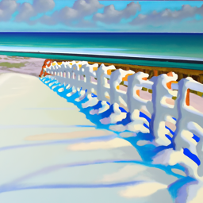
"an oil painting of snow on a beach", num_inference_steps=20
"a photo of a family of ducks", num_inference_steps=120
"sunset over a forest", num_inference_steps=120
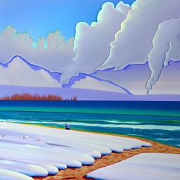
"an oil painting of snow on a beach", num_inference_steps=120
Part 1: Sampling Loops
Part 1.1: Implementing the Forward Process
In this part, I implemented the forward(im, t) function to add Gaussian noise to the given image using torch.randn_like.
Below is the test image of the Campanile at noise levels 250, 500, and 750.

Berkeley Campanile
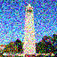
Noisy Campanile @ t=250
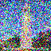
Noisy Campanile @ t=500
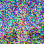
Noisy Campanile @ t=750
Part 1.2: Classical Denoising
In this part, I used Gaussian blur filtering to denoise the given noisy images.
Below are the images from the previous part with the Gaussian-denoised images below.
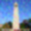
Gaussian Denoising @ t=250
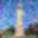
Gaussian Denoising @ t=500
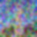
Gaussian Denoising @ t=750
Part 1.3: One-Step Denoising
In this part, I denoised images using a pretrained diffusion model instead.
The model retrieves the Gaussian noise present in the image and then removes it to get the original image.
Below are the images from part 1.1 with the diffusion model denoised images below.
One-Step Denoised Campanile @ t=250
One-Step Denoised Campanile @ t=500
One-Step Denoised Campanile @ t=750
Part 1.4: Iterative Denoising
In this part, I used the equations present in the Denoising Diffusion Probabilistic Models paper to iteratively denoise an image starting at i_start across strided timesteps.
Below is the noisy image every 5th denoising loop as well as the comparisons between the original, iterative denoising, one-step denoising, and Gaussian blurred images.
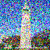
Noisy Campanile @ t=390
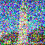
Noisy Campanile @ t=540
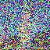
Noisy Campanile @ t=690

Original
Iteratively Denoised Campanile
One-Step Denoised Campanile
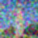
Gaussian Blurred Campanile
Part 1.5: Diffusion Model Sampling
In this part, I sampled 5 images from the diffusion model with i_start=0 and random noise.
Part 1.6: Classifier-Free Guidance (CFG)
In this part, I implemented the iterative_denoise_cfg function similar to the iterative_denoise function but with classifier-free guidance.
To do this, I used the stage_1.unet function twice to get the conditional noise estimate as well as the unconditional noise estimate to then use for the calculation of the new noise estimate.
Then, I sampled 5 images from the diffusion model using this iterative_denoise_cfg function.

Sample 5 w/ CFG
Part 1.7: Image-to-image Translation
In this part, I ran the forward function to get a noisy image and then called iterative_denoise_cfg with steps [1, 3, 5, 7, 10, 20] to slowly apply "edits" to the original image.
We can see below that as the steps increase, the output starts to look more like the original image.

SDEdit w/ i_start=7

SDEdit w/ i_start=20

Campanile (Original)

Plane View (Original)

Garden (Original)
Part 1.7.1: Editing Hand-Drawn and Web Images
In this part, I ran the same method as the previous section with steps [1, 3, 5, 7, 10, 20] to slowly apply "edits" to the original image.
This time, I used images that I drew as well as web images to project them onto the natural image manifold, leveraging the diffusion model.
Once again, we can see below that as the steps increase, the output starts to look more like the original image and more realistic.
Part 1.7.2: Inpainting
In this part, I followed the same procedure as the previous iterative_denoise_cfg function, but I incorporated a binary mask to only generate new content where the mask=1 and keep the same content where the mask=0.
I used the update step for x_t from the RePaint paper to implement this mask modification at each denoising step.

Campanile

Mask

Hole to Fill
Part 1.7.3: Text-Conditional Image-to-image Translation
In this part, I changed the prompt to be "a photo of a family of ducks" rather than "a high quality photo".
As the noise levels increase, the output starts to look more like the text prompt as well as the original image.
Campanile @ noise level 1
Campanile @ noise level 3
Campanile @ noise level 5
Campanile @ noise level 7
Campanile @ noise level 10
Campanile @ noise level 20
Campanile
Plane View @ noise level 1
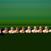
Plane View @ noise level 3
Plane View @ noise level 5
Plane View @ noise level 7
Plane View @ noise level 10
Plane View @ noise level 20
Part 1.8: Visual Anagrams
In this part, I used two prompts and denoised the image with the first prompt to get the first noise estimate.
Next, I flipped the image upside down and denoised it with the second prompt to get the second noise estimate.
Then, I flipped the second noise estimate back and combined both these estimates by taking the average of them.
Lastly, I used this averaged noise estimate for a reverse diffusion step to generate the visual anagram images below.
"An oil painting of snow on a beach"

"An oil painting of a busy city street"

"A photo of a family of ducks"

"Dolphins jumping out of the water"
Part 1.9: Hybrid Images
In this part, I used two prompts again and denoised the image with the first prompt to get the first noise estimate.
Similarly, I denoised the image with the second prompt to get the second noise estimate.
Then, I put the first noise estimate through a low pass function and the second noise estimate through a high pass function to add them and get the final noise estimate.
Lastly, I used this final noise estimate for a reverse diffusion step to generate the hybrid images below.
Hybrid image of "sunset over a forest" and "an oil painting of a busy city street"
Hybrid image of "an oil painting of snow on a beach" and "dolphins jumping out of the water"
Part 1: Training a Single-Step Denoising UNet
Part 1.1: Implementing the UNet
In this part, I implemented the Unconditional UNet model using the model architecture in the images below.
As shown below, the standard UNet operations consist of Conv, DownConv, UpConv, Flatten, Unflatten, Concat, ConvBlock, DownBlock, and UpBlock.
This model includes both downsampling blocks as well as upsampling blocks with skip connections.

Unconditional UNet Architecture (from project spec)

Standard UNet Operations (from project spec)
Part 1.2: Using the UNet to Train a Denoiser
In this part, I generated a visualization of the different noising processes over different sigma values, following the equation z = x + sigma*epsilon, where epsilon is normally distributed noise.
We can see that as sigma increases, the image get noisier.

sigma=0.0

sigma=1.0
Part 1.2.1: Training
In this part, I trained the Unconditional UNet on the MNIST dataset for 5 epochs using sigma=0.5, a batch size of 256, a hidden dimension of 128, and the Adam optimizer with learning rate 1e-4.
Below is the training loss curve as well as the denoised image results after both the 1st and 5th epochs.
After Epoch 1

Input

Input

Input
After Epoch 5

Input

Input

Input
Part 1.2.2: Out-of-Distribution Testing
In this part, I generated a visualization of the different noising processes over different sigma values on the test set after the model was trained in the previous step.
We can see that the model performs pretty well on data it was not trained for, but for large sigma values, the image does get noisier.
Noisy Images

sigma=0.0
Denoised Images
Part 1.2.3: Denoising Pure Noise
In this part, I followed the same training process as part 1.2.1, but I added pure Gaussian noise and denoised for 5 epochs.
Below is the training loss curve as well as the denoised image results after both the 1st and 5th epochs.
The generated outputs have similar blurry pattern that does not match any of the digits in the dataset.
We know that with MSE loss, the model is minimizing the mean squared distances, which is associated with the centroid of the image.
This is because denoising pure Gaussian noise results in an averaged version of this noise across all digits.
We can see that after epoch 5, the generated outputs are more blurry and blended comapred to the outputs after epoch 1.
After Epoch 1
After Epoch 5
Part 2: Training a Flow Matching Model
Part 2.1: Adding Time Conditioning to UNet
In this part, I added a time scalar to the UNet model architecture.
I followed the architecture in the images below, which includes new fully-conditioned blocks, or FCBlocks, that include this scalar t condition.
This allows the Conditioned UNet to construct intermediate noisy samples using the relative time to the clean samples.

Conditioned UNet Architecture (from project spec)

FCBlock (from project spec)
Part 2.2: Training the UNet
In this part, I followed Algorithm 1 below to train the time-conditioned UNet over 10 epochs.
This essentially repeats the process of adding uniform noise to a random clean image from the training set, and the model is trained to predict the flow from the noisy image to the clean image based on the timestep.
I used a batch size of 64, a hidden dimension of 64, the Adam optimizer with an initial learning rate of 1e-2, and an exponential learning rate delay scheduler with gamma 0.1**(1.0/num_epochs).
Below is the training loss curve over this process.
Part 2.3: Sampling from the UNet
In this part, I follow Algorithm 2 below to sample from the time-conditioned UNet.
The algorithm iteratively denoises pure Gaussian noise by predicting the flow at each timestep.
Below are the results for epochs 1, 5, and 10.
Part 2.4: Adding Class-Conditioning to UNet
In this part, I added a condition for the class of digit to the time-conditioned UNet model architecture.
To do this, I added 2 additional FCBlocks with one-hot vectors for the class as opposed to scalars like I did with timesteps.
In addition, I implemented dropout so 10% of the time the one-hot vector is set to 0.
This allows the Conditioned UNet to learn both the unconditional as well as conditional generations.
Part 2.5: Training the UNet
In this part, I followed Algorithm 3 below to train the class-conditioned UNet over 10 epochs.
This is essentially the same training process as Algorithm 1 for the time-conditioned UNet, but it also conditions the model on the one-hot encoded digit class vector, with the dropout condition discussed in the previous part.
I used the same hyperparameters as part 2.2 (a batch size of 64, a hidden dimension of 64, the Adam optimizer with an initial learning rate of 1e-2, and an exponential learning rate delay scheduler with gamma 0.1**(1.0/num_epochs)).
Below is the training loss curve over this process.
Part 2.6: Sampling from the UNet
In this part, I follow Algorithm 4 below to sample from the class-conditioned UNet.
The algorithm follows a similar sampling process to Algorithm 2 for the time-conditioned UNet, but it additionally uses classifier-free guidance by utilizing the conditional and unconditional generations.
Below are the results for epochs 1, 5, and 10.
To get rid of the learning rate scheduler while maintaining the same performance, I reduced the overall learning rate to be lower than the initial learning rate of 1e-2, since the learning rate scheduler slowly decreases the learning rate across epochs.
Specifically, I reduced the learning rate to 1e-3, which is between the initial and final learning rates from the scheduler.
Below is the training loss curve over this process without the scheduler, as well as the results for epochs 1, 5, and 10.